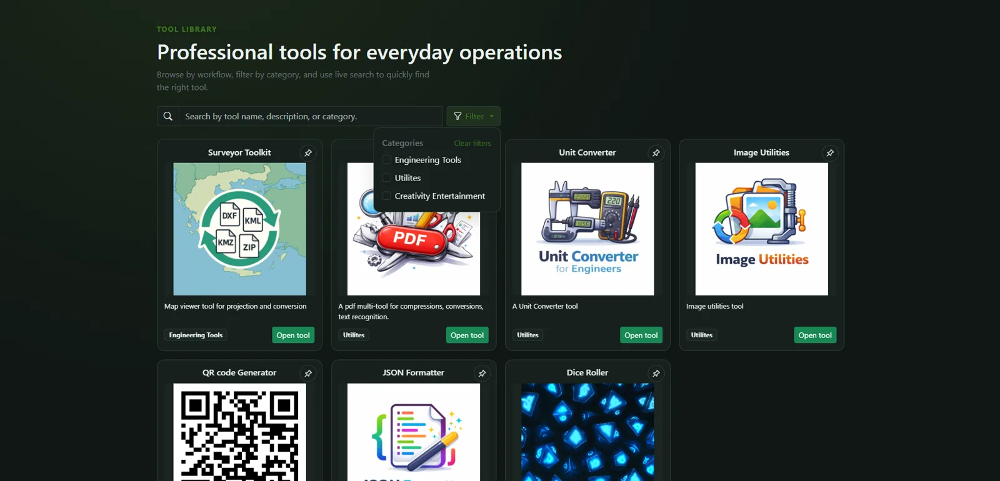
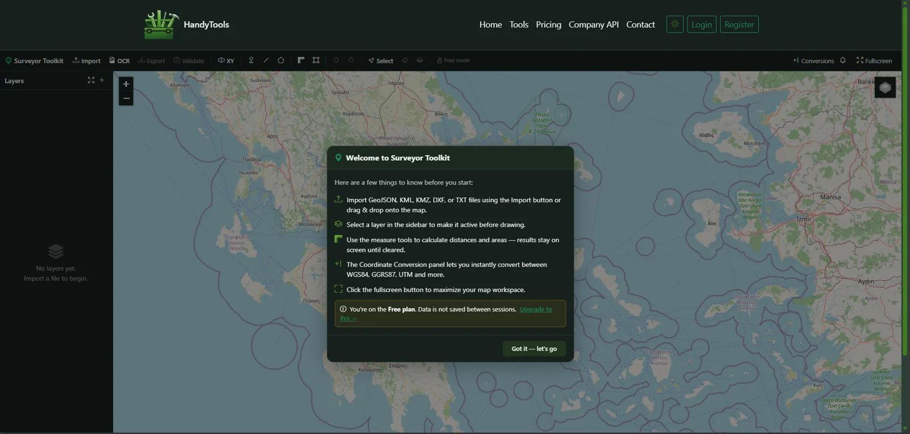
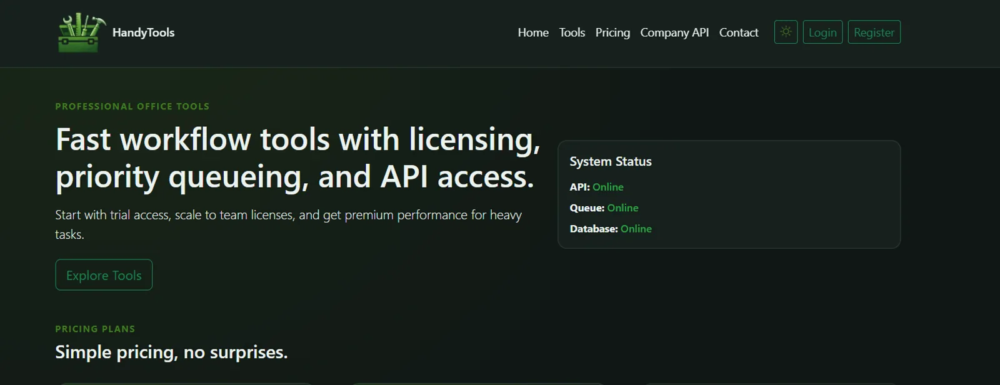

case-study/handytools
HandyTools: keeping heavy document jobs off the request path



Tool library — category filters and live search across the modular toolbox
Context
HandyTools runs OCR and PDF conversions that can take minutes on CPU-only hardware: EasyOCR (PyTorch) and Tesseract for text recognition, PyMuPDF and pdf2docx for documents. Uploads go up to 50 MB, free accounts have a daily allowance, and the whole thing runs as one Docker Compose stack on a single Hetzner server. Requests had to stay fast, and the server had to survive a bad file.
Design
- Files stay on disk. The view stages the upload and queues only its path, so large files never pass through Redis. The job id doubles as the Celery task id.
- Job state lives in the cache, not the database. Status is short-lived, high-churn data, so it sits in Redis with a TTL and expires on its own. PostgreSQL holds what has to last: users, plans, quotas and usage rows.
- The browser polls. A status endpoint checks that the job belongs to the requester; the result is downloaded once and deleted after it is served.
- Workers are configured defensively: late acknowledgement, prefetch 1, three attempts 10 s apart, soft/hard time limits of 270/300 s, concurrency 2, and a recycle after 100 tasks.
- Cancelling is cooperative. A cache flag is checked between pages, and
revoke()covers jobs that haven't started. Celery beat sweeps expired job files, orphaned media and lapsed subscriptions.
What broke: a failed job that wasn't
The task's error handler marked a job failed and then asked Celery to retry. That was a deliberate choice, so the browser's poller would stop spinning, and it turned out to be wrong in three ways:
- The browser stops polling at failed, so a retry that succeeded was never collected.
- A failed usage row gives the free daily allowance back, so a run that failed and then succeeded was free.
- Users saw the raw exception text.
I caught it in a full code review on 16 October 2026, before any user reported it. The fix is a single
retry-or-fail path: the job stays processing until the last attempt, only then is it marked failed
with a generic message, and the details go to the logs. A regression test,
test_crash_then_successful_retry_is_not_reported_failed, keeps it that way.
What broke: the A0 plot that killed a worker
On 21 October 2026 a real A0 CAD plot made a worker run out of memory. Its PDF text was glyph-coded, so text
extraction found nothing usable and the job fell back to slow, tiled OCR. A worker killed by the operating
system runs no except blocks, so the job sat at processing forever. I fixed it in two
places:
- A custom Celery request class whose
on_failureandon_timeouthooks mark the job failed even when the task's own code never gets the chance. - Decoding the PDF's own font maps so the text can be read directly, which took that plot from minutes to about one second.
Result and next steps
About 700 tests run in GitHub Actions alongside ruff, mypy and a missing-migration check, and a restricted beta is open to invited engineers. Next up: wiring paid-tier priority into Celery routing (the data model exists; the routing doesn't yet) and Stripe billing.